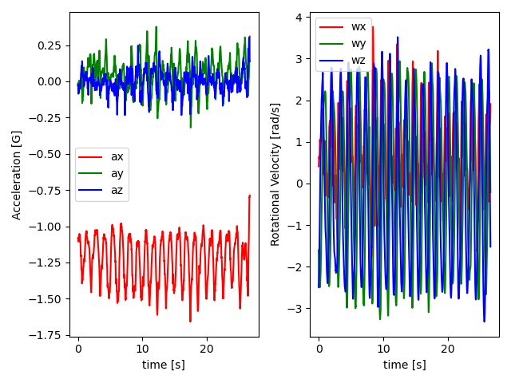

Note
Click here to download the full example code
Working with Time Series Data¶
This example shows how to load the included smartwatch inertial sensor dataset, and create time series data objects compatible with the seglearn pipeline.
Out:
DATA STATS - AGGREGATED
{'Total_Time': 4882.04, 'Series_Time_Range': (18.94, 52.36), 'n_classes': 7, 'n_series': 140, 'Series_Time_Mean': 34.87171428571428, 'Series_Time_Std': 8.757850351285423, 'n_TS_vars': 6, 'n_context_vars': 2}
DATA STATS - BY CLASS
Class_labels Series_Time_Max ... Total_Time n_series
0 PEN 31.10 ... 532.44 20
1 ABD 49.10 ... 798.10 20
2 FEL 50.84 ... 809.96 20
3 IR 52.36 ... 747.90 20
4 ER 49.24 ... 752.08 20
5 TRAP 45.12 ... 611.56 20
6 ROW 38.66 ... 630.00 20
[7 rows x 7 columns]
# Author: David Burns
# License: BSD
from seglearn.datasets import load_watch
from seglearn.util import check_ts_data, ts_stats
from seglearn.base import TS_Data
import numpy as np
import pandas as pd
import matplotlib.pyplot as plt
data = load_watch()
y = data['y']
Xt = data['X']
fs = 50 # sampling frequency
# create time series data object with no contextual variables
check_ts_data(Xt)
# create time series data object with 2 contextual variables
Xs = np.column_stack([data['side'], data['subject']])
X = TS_Data(Xt, Xs)
check_ts_data(X)
# recover time series and contextual variables
Xt = X.ts_data
Xs = X.context_data
# generate some statistics from the time series data
results = ts_stats(X, y, fs = fs, class_labels = data['y_labels'])
print("DATA STATS - AGGREGATED")
print(results['total'])
print("")
print("DATA STATS - BY CLASS")
print(pd.DataFrame(results['by_class']))
# plot an instance from the data set
# this plot shows 6-axis inertial sensor data recorded by someone doing shoulder pendulum exercise
Xt0 = Xt[0]
f, axes = plt.subplots(nrows=1, ncols=2)
t=np.arange(len(Xt0)) / fs
axes[0].plot(t, Xt0[:,0], 'r-')
axes[0].plot(t, Xt0[:,1], 'g-')
axes[0].plot(t, Xt0[:,2], 'b-')
axes[0].set_xlabel('time [s]')
axes[0].set_ylabel('Acceleration [G]')
axes[0].legend(data['X_labels'][0:3])
axes[1].plot(t, Xt0[:,3], 'r-')
axes[1].plot(t, Xt0[:,4], 'g-')
axes[1].plot(t, Xt0[:,5], 'b-')
axes[1].set_xlabel('time [s]')
axes[1].set_ylabel('Rotational Velocity [rad/s]')
axes[1].legend(data['X_labels'][3:6])
plt.tight_layout()
plt.show()
Total running time of the script: ( 0 minutes 0.570 seconds)